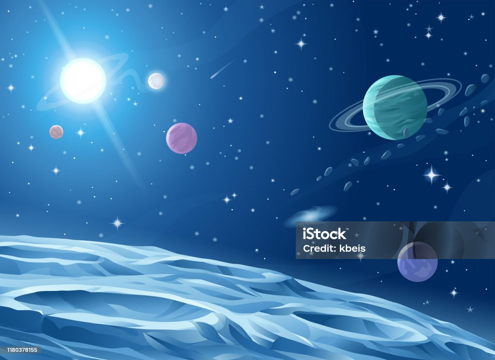
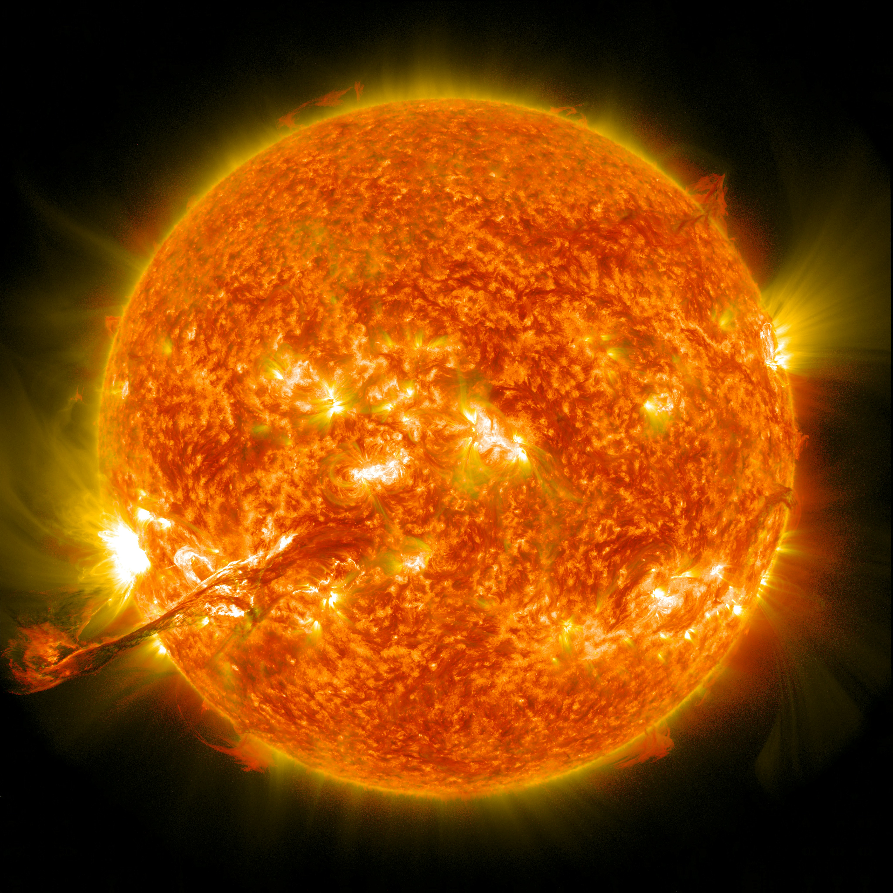
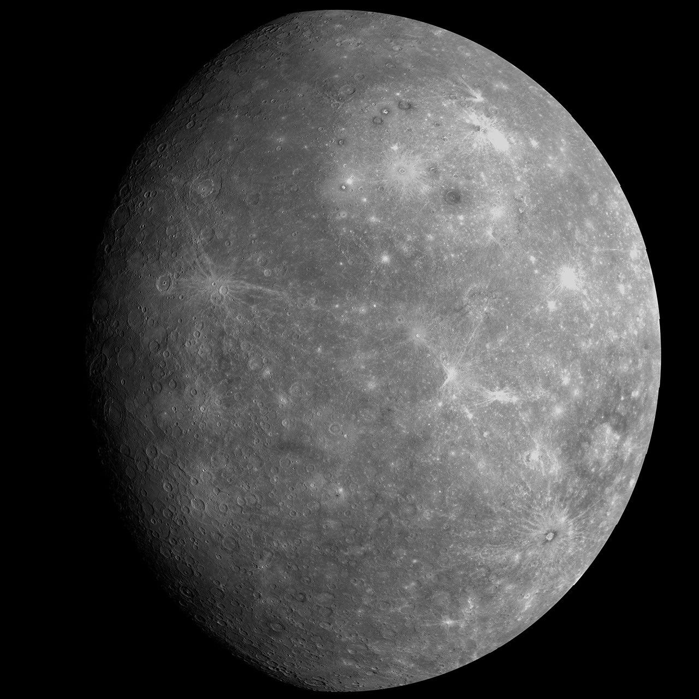
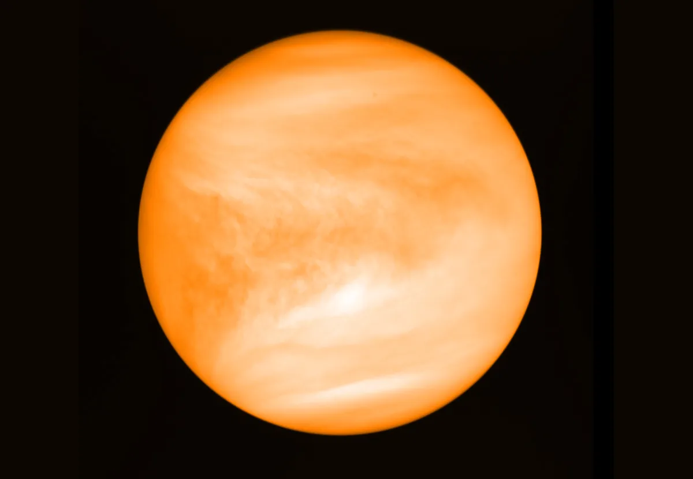
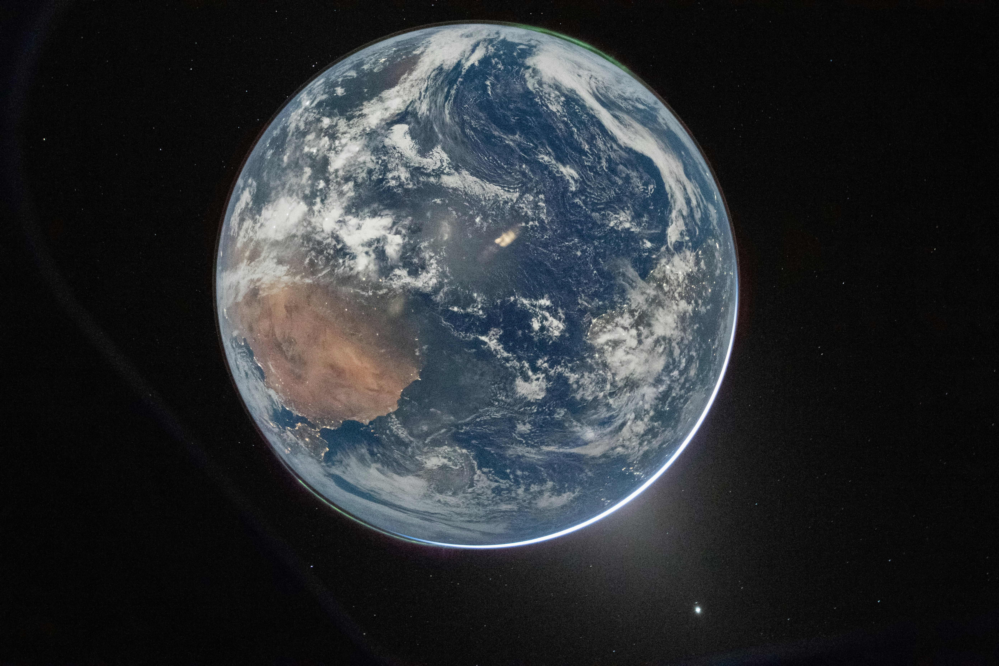
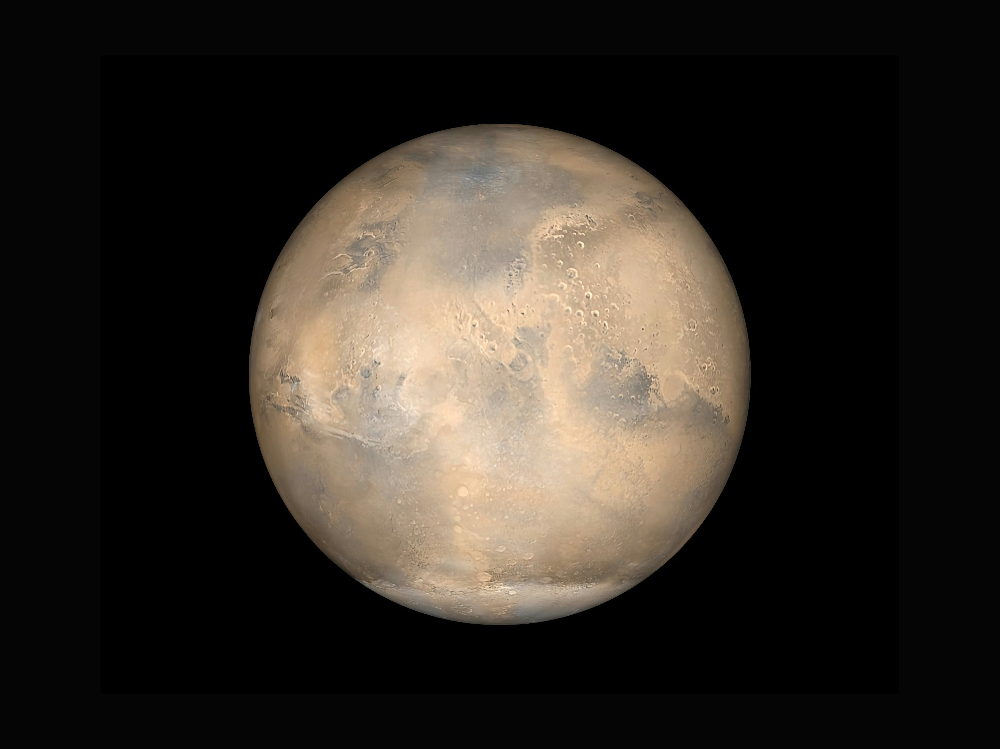
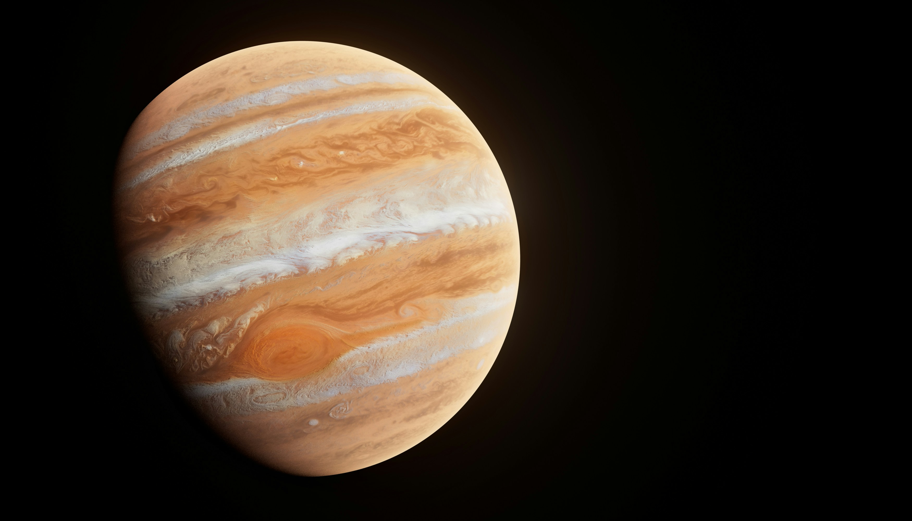
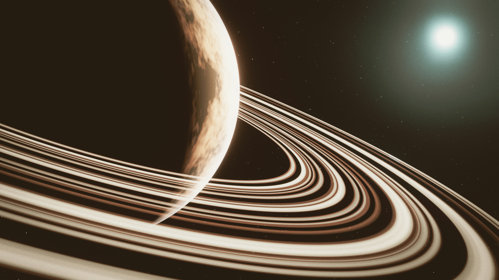
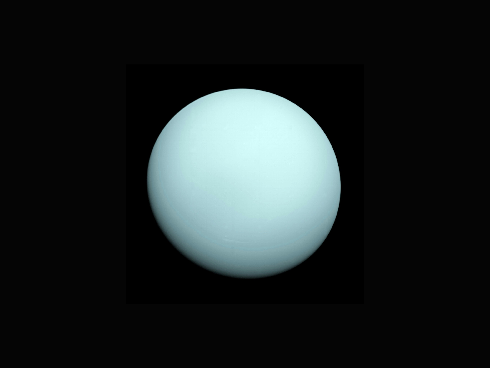
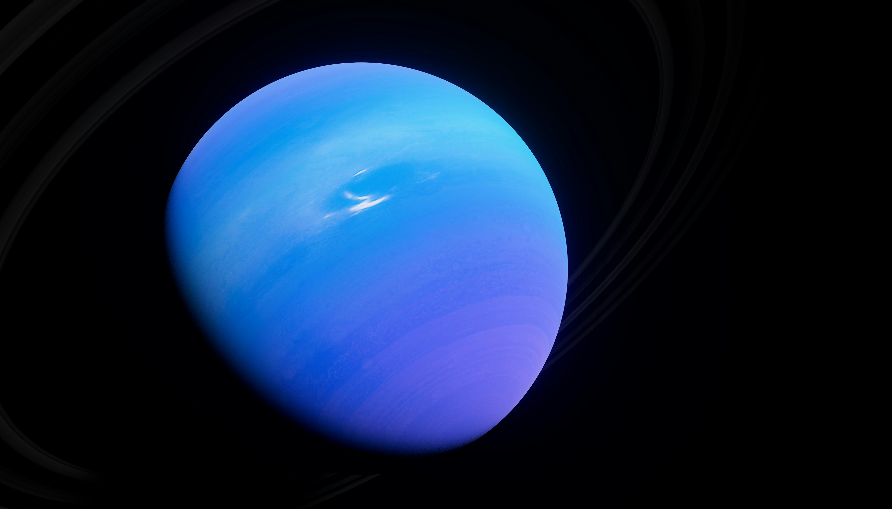

The sun is very important because it provides heat/warmth to the Earth, its gravity keeps the planets in orbit around it, and it is the main source of energy for Earth's climate and weather. (The sun is not a planet, it is actually a star.)

There are eight primary planets in our solar system:
Mercury is one of the 8 major planets in the solar system. Mercury is the smallest planet in our Solar System, it is the closest to the Sun, and its surface can reach around 430°C during the day and drop to around -180°C at night.

Venus is the second planet from the Sun and the hottest planet in our solar system. Its surface temperature can reach up to 471°C, making it hotter than Mercury despite being farther from the Sun.

Earth is the third planet from the Sun and the only known celestial body to harbor life. It is the largest of the four terrestrial planets and has a single natural satellite, the Moon.

Mars is the fourth planet from the Sun and is often called the "Red Planet" due to its reddish appearance caused by iron oxide (rusts) on its surface.

Jupiter is the fifth planet from the Sun and the largest in our solar system. It is a gas giant with a mass more than twice that of all the other planets combined.

Saturn is the sixth planet from the Sun and the second-largest in our solar system. It is a gas giant known for its prominent ring system.

Uranus is the seventh planet from the Sun and the third-largest in our solar system. It is a gas giant with a unique sideways rotation.

Neptune is the eighth and farthest-known planet from the Sun in our solar system. It is a gas giant with a deep blue coloration due to the presence of methane in its atmosphere.

| Planet | Order from the Sun | Diameter (km) | Length of each day | Mass (1024 kg) |
|---|---|---|---|---|
| Mercury | 1st | 4,880 | 4222.6 ≈ 4223 Hours | 0.330 |
| Venus | 2nd | 12,104 | 2802 hours | 4.87 |
| Earth | 3rd | 12756 | 24 hours | 5.97 |
| Mars | 4th | 6792 | 24.7 ≈ 25 hours | 0.642 |
| Jupiter | 5th | 142984 | 9.9 ≈ 10 hours | 1898 |
| Saturn | 6th | 120536 | 10.7 ≈ 11 hours | 568 |
| Uranus | 7th | 51118 | 17.2 ≈ 17 hours | 86.8 |
| Neptune | 8th (Furthest) | 49528 | 16.1 ≈ 16 hours | 102 |